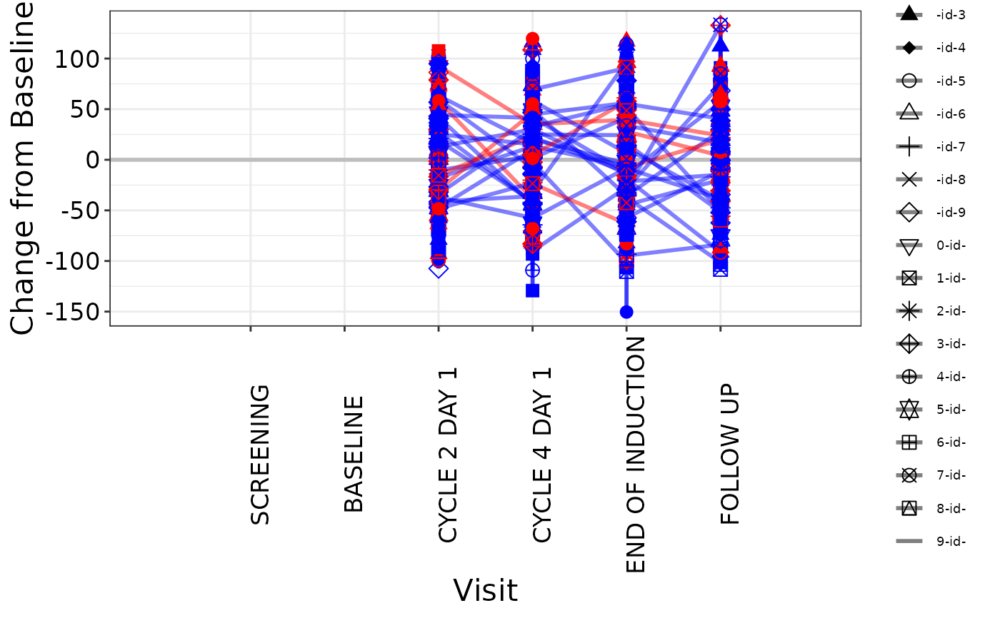

Spider plot is often used in Early Development (ED) and displays individual patient plot of an endpoint over time by group.
Usage
g_spiderplot(
marker_x,
marker_id,
marker_y,
line_colby = NULL,
line_color_opt = NULL,
marker_shape = NULL,
marker_shape_opt = NULL,
marker_size = 3,
datalabel_txt = NULL,
facet_rows = NULL,
facet_columns = NULL,
vref_line = NULL,
href_line = NULL,
x_label = "Time (Days)",
y_label = "Change (%) from Baseline",
show_legend = FALSE
)Arguments
- marker_x
vector of x values (must be in sorted order)
- marker_id
vector to group the points together (default should be
USUBJID)- marker_y
vector of y values
- line_colby
vector defines by what variable plot is color coded, default here is
NULL- line_color_opt
vector defines line color, default here is
NULL- marker_shape
vector defines by what variable points are shape coded, , default here is
NULL- marker_shape_opt
vector defines marker shape code, default here is
NULL- marker_size
size of markers in plot, default here is
NULL- datalabel_txt
-
list defines text (at last time point) and flag for an arrow annotation:
(per defined variable) elements must be labeled
txt_ann/mrkr_all/mrkr_ann.txt_anntext annotation next to final data point (for text annotation)mrkr_allvector of ID's (for annotation marker)mrkr_annvector of ID's (subset ofmrkr_all) where arrow is desired to indicate any study interim points. Default here isNULL.
- facet_rows
dataframe defines what variable is used to split the plot into rows, default here is
NULL.- facet_columns
dataframe defines what variable is used to split the plot into columns, default here is
NULL.- vref_line
value defines vertical line overlay (can be a vector), default here is
NULL.- href_line
value defines horizontal line overlay (can be a vector), default here is
NULL.- x_label
string of text for x axis label, default is time.
- y_label
string of text for y axis label, default is % change.
- show_legend
boolean of whether marker legend is included, default here is
FALSE.
Author
Carolyn Zhang (zhanc107) carolyn.zhang@duke.edu
Examples
# simple example
library(dplyr)
library(nestcolor)
ADTR <- osprey::rADTR %>% select(STUDYID, USUBJID, ADY, AVISIT, CHG, PCHG, PARAMCD)
ADSL <- osprey::rADSL %>% select(STUDYID, USUBJID, RACE, SEX, ARM)
ANL <- left_join(ADTR, ADSL, by = c("STUDYID", "USUBJID"))
ANL <- ANL %>%
dplyr::filter(PARAMCD == "SLDINV" & AVISIT != "POST-BASELINE MINIMUM") %>%
dplyr::filter(RACE %in% c("WHITE", "ASIAN")) %>%
group_by(USUBJID) %>%
dplyr::arrange(ADY) %>%
dplyr::mutate(
CHG = ifelse(AVISIT == "Screening", 0, CHG),
PCHG = ifelse(AVISIT == "Screening", 0, PCHG)
)
ANL$USUBJID <- substr(ANL$USUBJID, 14, 18)
# Plot 1 - default color and shape mapping
g_spiderplot(
marker_x = ANL$ADY,
marker_id = ANL$USUBJID,
marker_y = ANL$PCHG,
line_colby = ANL$USUBJID,
marker_shape = ANL$USUBJID,
# marker_size = 5,
datalabel_txt = list(txt_ann = ANL$USUBJID),
# facet_rows = data.frame(sex = ANL$SEX),
# facet_columns = data.frame(arm = ANL$ARM),
vref_line = c(42, 86),
href_line = c(-20, 20),
x_label = "Time (Days)",
y_label = "Change (%) from Baseline",
show_legend = TRUE
)
#> Warning: Removed 554 rows containing missing values or values outside the scale range
#> (`geom_line()`).
#> Warning: Removed 568 rows containing missing values or values outside the scale range
#> (`geom_point()`).
#> Warning: Removed 564 rows containing missing values or values outside the scale range
#> (`geom_text()`).
# Plot 2 - with line color mapping
g_spiderplot(
marker_x = ANL$AVISIT,
marker_id = ANL$USUBJID,
marker_y = ANL$CHG,
line_colby = ANL$RACE,
line_color_opt = c("WHITE" = "red", "ASIAN" = "blue"),
marker_shape = ANL$USUBJID,
x_label = "Visit",
y_label = "Change from Baseline",
show_legend = TRUE
)
#> Warning: Removed 564 rows containing missing values or values outside the scale range
#> (`geom_line()`).
#> Warning: Removed 568 rows containing missing values or values outside the scale range
#> (`geom_point()`).
